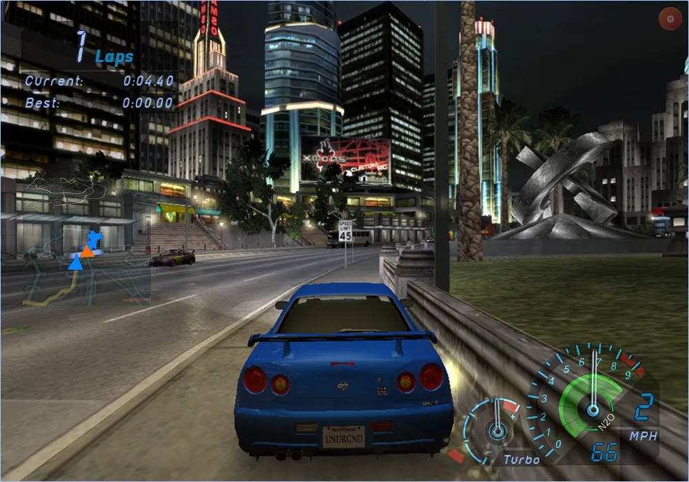

La caja de herramientas de ingeniería inversa: Ghidra, Hopper, REA y un censo de nombres
Recompilar un juego lo hace correr. Cambiarlo, corregirlo o agregarle opciones exige entenderlo, y un ejecutable de 2003 llega sin nombres, sin símbolos y sin comentarios.

Las herramientas
- Ghidra, sin ventana, desde scripts: todo el ejecutable descompilado a un código parecido a C en cuatro rangos de direcciones, guardado como texto para que cualquier buscador lo lea.
- Hopper, un desensamblador para macOS: un segundo descompilador con su propia opinión de cada función, exportado igual.
- REA, un servidor de ingeniería inversa con el que hablan los agentes de IA por MCP (Model Context Protocol): abrir el binario, leer el pseudocódigo de una función, ver quién llama a una dirección, leer bytes crudos.
- objdump y Capstone para la lista simple de instrucciones, la última palabra cuando los descompiladores no coinciden.
- El juego corriendo: un interruptor de traza registra cada llamada a Windows y DirectX con sus argumentos, para comparar una suposición sobre una función con lo que de verdad hace.
Dos herramientas o no cuenta
Los descompiladores se equivocan en cosas pequeñas: un argumento perdido, un número decimal leído como entero, una tabla de saltos cortada. Por eso el proyecto tiene una regla: cada valor, formato de archivo o parche nombra lo que lo prueba (una dirección del ejecutable, un id de bloque en un archivo de datos, una línea del código), leído con REA más una segunda herramienta. Lo que no está probado se escribe como UNKNOWN, y nada se construye encima.
Un censo en vez de una wiki
Los nombres se guardan como tablas simples, una por sistema: coches, cámara, colisiones, menús, audio, la IA de los rivales. Cada fila es una dirección, un nombre y una marca: V si se leyó en el código, I si se dedujo, U si se desconoce. Hoy hay 55 tablas con 10,742 filas, junto a un censo de las 14,330 entradas de función de Speed.exe. Una tabla se puede buscar, comparar y revisar con un script; una página de prosa no.
Un ejemplo
Los controles de celular necesitaban un botón ATRÁS. En vez de simular una tecla y esperar que funcione, se leyó el código de entrada hasta encontrar la tabla de acciones del menú (dirección 0x7032d8): una de sus acciones es Back, y sus teclas son Escape y Retroceso. El botón táctil manda exactamente esa tecla, y el juego hace el resto como en 2003.
Notas por sistema
Cada investigación deja una nota corta en docs/re/: cómo la cámara sigue al coche, cómo eligen línea los rivales, cómo carga el juego una pista. Son mapas para el siguiente, no ensayos. Todo está en GitHub. El trabajo lo hicieron agentes de IA bajo estas reglas: así funcionó.
En el repo: docs/re · census · tools/hopper · census/ghidra